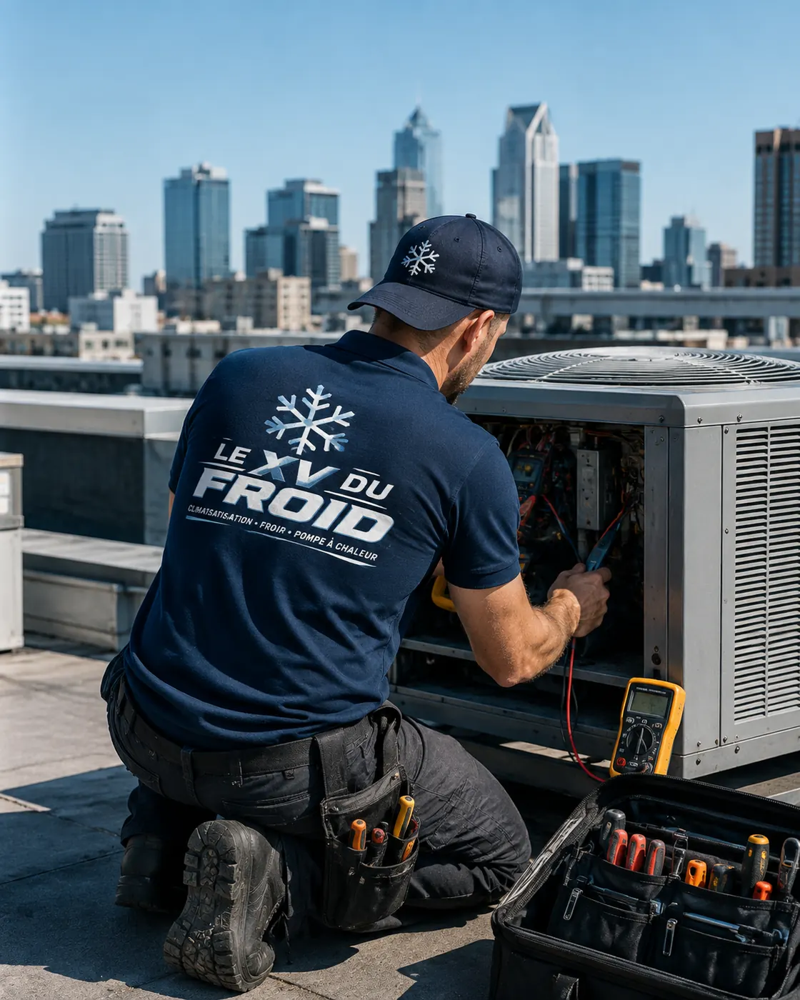

Dépannage climatisation Conflans-Sainte-Honorine · 78700
Dépannage climatisation à Conflans-Sainte-Honorine : la clim ne refroidit plus, manque-t-il du gaz ?
L’air sort tiède, l’unité tourne, mais la pièce ne descend pas en température. On soupçonne souvent le gaz. C’est une piste sérieuse, à une condition : chercher la fuite avant de recharger, sans quoi le problème reviendra.
- Fuite recherchée avant recharge
- Fluide manipulé dans les règles
- Devis écrit avant travaux

Le fluide
Un circuit fermé ne consomme pas son gaz.
Dans une climatisation, le fluide frigorigène circule en boucle fermée. Il ne s’use pas et ne s’évapore pas avec le temps. S’il en manque, c’est qu’il s’est échappé quelque part : raccord mal serré, tube écrasé, soudure fatiguée, vibration prolongée.
Recharger sans chercher revient à remplir un seau percé. L’appareil refroidit quelques semaines, puis le défaut reprend. C’est aussi interdit de laisser volontairement s’échapper un fluide dans l’air.
Sur les bords de Seine et d’Oise, l’air salin n’est pas en cause, mais l’humidité attaque parfois les raccords cuivre des groupes extérieurs mal protégés.
Les signes
Comment reconnaître un manque de fluide
Le symptôme principal est un souffle moins froid, avec un appareil qui tourne longtemps sans atteindre la consigne. Autres indices : du givre sur le tube fin ou sur l’unité extérieure, un sifflement à l’aspiration, ou un compresseur qui s’arrête par sécurité.
Une pièce trop grande pour l’appareil, un filtre bouché ou un groupe extérieur au soleil donnent des signes proches. D’où l’intérêt de mesurer avant de conclure.
Seul un professionnel formé et autorisé peut récupérer et recharger le fluide d’une climatisation. Ce n’est pas un geste de bricolage.

Réparation climatisation Conflans-Sainte-Honorine : comment on trouve une fuite
Le technicien relève les pressions, compare les températures de part et d’autre du détendeur et repère le raccord suspect. Il contrôle ensuite à l’aide d’un détecteur électronique et d’une solution moussante.
Une fuite franche se voit parfois à la trace d’huile autour d’un raccord. Une fuite lente se cherche plus longtemps, par mise en pression d’azote.
Une fois la fuite réparée, le circuit est tiré au vide, puis rechargé avec la quantité indiquée sur la plaque de l’appareil.
- Pressions et températures mesurées
- Fuite localisée et réparée
- Tirage au vide puis recharge
Cas fréquents
Où le gaz s’échappe le plus souvent
Dans notre expérience de terrain, voici les endroits à regarder en premier.
- Raccords flare : écrous desserrés par les vibrations ou mal évasés à la pose.
- Tubes cuivre : frottement contre un support ou écrasement lors d’un déplacement.
- Échangeur intérieur : microfissure sur un appareil ancien, plus rare.
- Vannes de service : bouchon manquant ou joint fatigué sur le groupe extérieur.
- Soudures : défaut d’origine qui se révèle avec les années.
Décision
Réparer ou remplacer quand le circuit fuit
Sur un appareil récent, on répare presque toujours. Sur un appareil de plus de dix ans, avec un fluide devenu rare ou une fuite sur l’échangeur, la discussion s’ouvre : le devis détaille le coût de la réparation et vous laisse le choix.
Dépannage clim Conflans-Sainte-Honorine ne veut pas dire pousser au remplacement. Si l’appareil vaut encore la réparation, nous le disons ; sinon, nous l’expliquons aussi.
Nous faisons au plus vite après votre appel. Précisez la marque, l’âge et ce que vous observez.
Questions
Manque de gaz sur une climatisation à Conflans-Sainte-Honorine : vos questions
Une clim peut-elle manquer de gaz sans fuite ?
Non. Le circuit est fermé : si le niveau baisse, il y a une fuite, même minuscule.
Peut-on simplement recharger ?
Ce n’est pas une bonne idée. La recharge sans réparation ne dure pas et gaspille un fluide polluant.
Comment demander un dépannage climatisation Conflans-Sainte-Honorine ?
Appelez avec la marque, l’âge de l’appareil et les symptômes. Nous faisons au plus vite, sans promettre de délai.
Combien de temps dure une recherche de fuite ?
Cela va de quelques minutes à plus d’une heure, selon que la fuite est franche ou très lente.
Mon appareil est ancien et utilise un vieux fluide, que faire ?
On regarde si le fluide est encore disponible. Le devis dit clairement si la réparation tient la route.
Intervenez-vous sur une clim posée par un autre ?
Oui, si le modèle est identifiable. Nous diagnostiquons et réparons aussi les appareils d’autres installateurs.
Dans votre ville
Les autres services à Conflans-Sainte-Honorine
Un besoin différent, une page différente : dépannage, entretien, installation ou urgence.
- Installation climatisation Conflans-Sainte-Honorine : maison ancienne et passage des tuyaux
- Climatisation Conflans-Sainte-Honorine : entretien et nettoyage
- Urgence climatisation Conflans-Sainte-Honorine : groupe extérieur qui penche ou se décroche
- Climatisation dans les Yvelines (78) : installation, dépannage, entretien, urgence
Autour de chez vous
Dépannage de climatisation dans les villes voisines
Si vous êtes à la limite de deux communes, lisez aussi la page d’à côté.
- Climatisation Poissy : dépannage et réparation climatiseur
- Climatisation Les Mureaux : réparation de climatiseur mural
- Dépannage climatisation Sartrouville : la clim souffle tiède, tour des causes
- Dépannage climatisation Houilles : locataire, qui paie et que dire au propriétaire
- Dépannage climatisation Mantes-la-Jolie : réversible qui ne chauffe plus
- Dépannage climatisation Chatou : bruits, vibrations et ventilateur qui racle
- Dépannage climatisation Rambouillet : panne après un orage ou une coupure de courant
- Dépannage climatisation Plaisir : la clim qui s’arrête toute seule
- Dépannage climatisation Saint-Germain-en-Laye : code erreur et pannes courantes
À côté
D’autres besoins dans les communes voisines
Chaque ville a ses pages.
Nos services
Aller plus loin sur la climatisation
Les pages du site qui complètent celle-ci : services, guides pratiques et devis.
- Dépannage climatisation en Île-de-France
- Installation de climatisation : split, gainable, monobloc
- Entretien de climatisation et de clim réversible
- Demander un devis climatisation gratuit
- Toutes nos zones d’intervention
- L’entretien de la climatisation est-il obligatoire ?
- Quelle puissance de climatisation choisir ?
Où on intervient
Conflans-Sainte-Honorine et alentours
Le centre, les bords de Seine, Chennevières, ainsi qu’Andrésy, Maurecourt, Achères et Poissy.
Demander un dépannageÀ lire aussi
Autour de Conflans-Sainte-Honorine
Pages voisines : climatisation Poissy, climatisation Maisons-Laffitte, climatisation Sartrouville.
Transparence
Un devis clair avant toute intervention.
Vous savez ce qui est prévu, pourquoi c’est nécessaire et à quel tarif avant que le technicien commence. Puis contrôles et essais avant son départ.